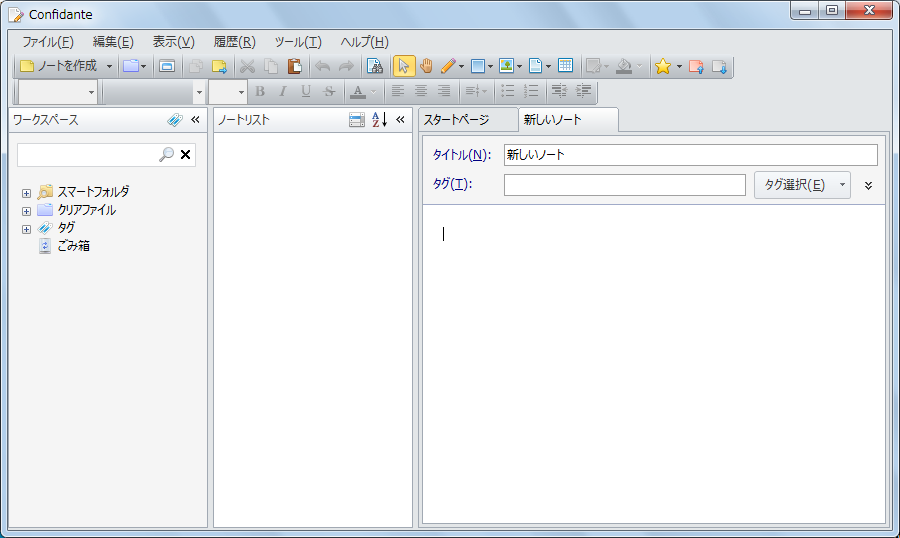
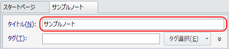
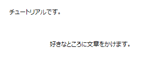
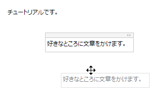
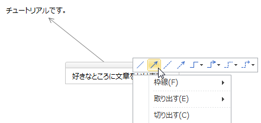
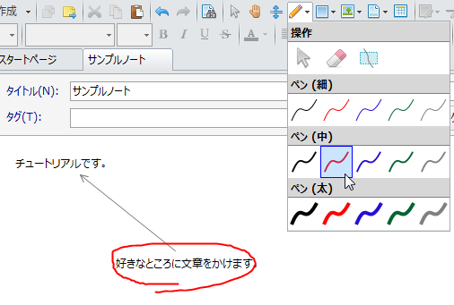

ノートをとる
まずはノートのとり方です。
新しいノートを作成する
画面上部のツールバーの 「ノートを作成」ボタンをクリックして新しいノートを作成します。
「ノートを作成」ボタンをクリックして新しいノートを作成します。
新しいノートが作成されてノートエディタで表示されます。

ノートのタイトルを編集する
「タイトル」テキストボックスでノートのタイトルを編集できます。

ノートに文章を書く
ノートに文章を追加するには，ノート上の好きな場所をクリックしてからキーボードのキーを入力するだけです。 また，他のアプリケーションからテキストをドラッグ&ドロップして文章を追加することもできます。

文章を移動する
文章を移動するには文章の上部の「移動」ハンドル上でマウスの左ボタンを押して，移動先までドラッグ&ドロップします。

線を追加する
テキスト間に線を追加するにはテキストを右クリックしてミニツールバーから追加する線を選択します。
※テキストが編集状態の場合，右クリックでは画像と異なるメニューが表示されます。 一度余白をクリックするなどしてテキストの編集状態を解除してから右クリックしてください。

手書きする
手書きするにはツールバーの 「手書き」ボタンをクリックして，
使用するペンを選択します。
「手書き」ボタンをクリックして，
使用するペンを選択します。
ノートエディタ上でドラッグ&ドロップすると線を手書きできます。
手書きを終了するにはツールバーの「選択と入力」ボタンをクリックします。
